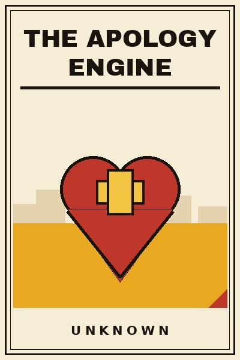

Library › Psychology & People
The Apology Engine - Summary & Key Lessons

Ten lessons on saying sorry properly: the craft of repair that saves relationships, reputations and entire brands.
📖 OPEN THE FULL INTERACTIVE BREAKDOWN →🌐 Read it in Hindi, Hinglish, Gujarati, Tamil & 22 more languages - free, with audio.
💡 The Big Idea
Everyone makes mistakes. Almost nobody repairs them well, and the difference between a relationship that survives and one that dies is usually one badly built apology. This book is the engineering of repair: what an apology actually does in the other person's nervous system, why the non-apology, the if, the but, the sorry-you-felt, pours salt instead of healing, and how a real one is assembled from parts anyone can learn: naming the harm, owning it without exits, understanding the cost, repairing concretely, and changing visibly. It scales from marriages to boardrooms to billion-dollar recalls, because the physics is identical, only the audience size changes. The examples are real: the corporate apologies that saved brands, the non-apologies that turned tumbles into falls, and the private repairs that saved decades of friendship. Mistakes are certain. Unrepaired mistakes are optional. This is the engine that tells the difference, and once you can hear a fake sorry at forty paces, you will never build one again.
🧠 The 10 Key Lessons
Lesson 1: The Non-Apology Autopsy
Chapter 1: The Words That Worsen
Learn the enemy first: the non-apologies that disguise themselves as civility. If I hurt you, conditionality on someone else's feelings. I am sorry you felt that way, blame wearing a bowtie. Sorry, but, a springboard for self-defence. Each of these fails for the same reason: it relocates the fault, from the doer to the receiver's sensitivity, and the receiver's nervous system registers the relocation instantly, upgrading the original wound with the insult of denial. The first lesson of repair is subtraction: remove the if, the but and the you-felt, and watch what remains. What remains is the beginning of an actual apology.
📖 Example: The corporate non-apologies that turned one-day scandals into month-long infernos, documented across every industry, all share the grammar of the if and the but; the public reads them faster than lawyers write them, and the verdict is always the same: they are sorry we got caught, not sorry it happened. Read the full example →
⚡ Do this: Audit your last three apologies, spoken or written. Circle every if, but and felt-that-way. Rewrite each without them and notice how much shorter and how much more uncomfortable the honest version is. The discomfort is the proof.
Lesson 2: Name the Harm
Chapter 2: The Specificity Rule
A real apology names what was actually done, in words the hurt person would use, at the level of detail that proves comprehension. Sorry for what I said is a shrug; Sorry that I laughed at your idea in front of the team, and then repeated it as my own a week later, is comprehension. Specificity is the proof-of-work of apology: it cannot be faked, because it requires actually understanding what you did, and it cannot be generic, because the details belong only to the real event. When you cannot name the harm, you do not yet understand it, and the apology must wait for the understanding, not skip it.
📖 Example: The crisis apologies that actually landed, studied across corporate history, always began with a precise accounting of what happened, dates, models, numbers, the truth told plainly; the vague regrets beside them, sorry for any inconvenience, became the second scandal within hours. Read the full example →
⚡ Do this: Before your next apology, write the harm in the other person's words, with dates and specifics, until the sentence makes you wince. Open the apology with that sentence. Watch what comprehension does to the room.
Lesson 3: Own It Without Exits
Chapter 3: The Weight Test
Ownership means the cause lives entirely in you: your action, your choice, your lapse. The moment the apology includes the traffic, the stress, the childhood, the alcohol or the other party's provocation, ownership has exits, and exits are felt as unfinished business. Context can be offered later, as understanding, but never as cause in the apology itself, because the two are opposites: context asks to be understood, cause asks to be excused, and the hurt party can smell the difference through walls. Stand in the full weight of it for the length of the apology. The standing is the message.
📖 Example: The leaders who apologised cleanly, cause entirely theirs, no exits, recovered reputations faster than seemed possible, while the ones who explained first and apologised second, stress, market conditions, a difficult childhood, watched the same audiences conclude that the sorry was decoration on a defence. Read the full example →
⚡ Do this: Rewrite your most recent apology removing every clause before the word because. Deliver the weight-bearing version. If the urge to add context arrives, schedule it for a different day, when the repair has healed.
Lesson 4: The Cost Audit
Chapter 4: Apologise for Their Loss, Not Your Crime
The subtle shift that separates good apologies from great ones: apologising for the cost to them, not the act by you. What I did cost you sleep, trust, standing in front of your team, money you had counted on. The cost audit proves that the apology is about the receiver's world rather than the doer's conscience, and it guides the repair toward what actually needs fixing. Most clumsy apologies fail here without noticing: they apologise for the wrong unit, the action, when the wound is in the consequence. Learn to see the cost first, and your apologies will land where the hurt actually lives.
📖 Example: The product recalls that retained customer love after the mistake were the ones that accounted for the customer's costs, the money, the time, the fear, and repaired those specifically; the recalls that apologised for the engineering while ignoring the stranded families read as liability documents, and were priced accordingly by the market. Read the full example →
⚡ Do this: Before apologising, list three costs your action created for the other person, in their currency. Apologise for those three, specifically. Let the act itself take second billing to its consequences.
Lesson 5: Repair Is a Noun
Chapter 5: Do Something, Then Say Sorry
Words open the door to repair; acts walk through it. The restored money, the public correction of the record, the changed process, the therapy appointment, the replaced item, the retracted statement. A real apology carries a repair clause: here is what I am doing about it, with a date. Without the clause, even the most beautiful sorry is a receipt for feelings, and receipts expire. The repair need not equal the harm, nobody can refund a betrayal exactly, but it must be concrete, costly to the repairer and visibly connected to the crime. The cost to you is part of the message: it proves the apology is made of something.
📖 Example: The relationship and reputation recoveries that lasted all carried a costly concrete act within days of the words, a public correction, a returned sum, a resignation even, while the word-only apologies, however eloquent, were remembered mainly as the prelude to the repeat offence. Read the full example →
⚡ Do this: Attach a repair clause to every apology you give from today: one concrete act, dated, that costs you something real. Say it in the apology itself. Review each week whether the act happened; the follow-through is the apology.
Lesson 6: The Change Clause
Chapter 6: Never Again, Made Visible
The final component separates apologies from apologies-plus-change: the visible, checkable difference that makes the offence structurally harder to repeat. The app that had the bug ships the test that would have caught it. The friend who gossips asks the group to hold them accountable. The manager who humiliated in public moves all feedback to private and says so. Change is the only answer to the hurt party's real question, which is not how sorry are you but how safe is this now, and visible systems answer it better than promises, because systems do not have bad weeks. An apology without a change clause is a reservation for the same table.
📖 Example: The companies that recovered from catastrophic failures all shipped a named, visible change, the recall process, the safety board, the public checklist, and pointed to it for years; the ones that apologised without machinery were remembered as the ones it happened to twice. Read the full example →
⚡ Do this: For your recurring offence, the one that keeps needing apologies, build one structural guardrail this month: a check, a delay, an accountability partner, a process step. Announce the guardrail as part of the apology. Let the system say never again for you.
Lesson 7: The Timing Window
Chapter 7: Fast, But Not Rushed
Apology timing has physics: too late and the wound calcifies into a story about you, too fast and it reads as a reflex to escape discomfort rather than understanding earned. The window: as soon as you genuinely understand the harm, which may be an hour or may require a day of listening first. Speed signals seriousness; so does the evidence of thought. When you cannot yet name the harm specifically, close the gap with the listening apology, I understand this hurt you, I am taking today to understand exactly how, and I will come back to you tomorrow, which keeps the door open without faking comprehension. Then keep the promise to return. The return is the apology's first down payment.
📖 Example: The crisis communications that worked engaged within hours with a named plan and returned with specifics within a day, while the lightning apologies that arrived before comprehension, and the silent weeks that arrived after calcification, both converted recoverable incidents into permanent verdicts. Read the full example →
⚡ Do this: Set your apology clock: within twenty-four hours of any harm you cause, either apologise with specificity or deliver the listening apology with a return date. Diary the return. The window closes faster than pride expects.
Lesson 8: Apologising Upward and Downward
Chapter 8: Power Corrupts the Sorry
Apology flows most easily between equals and dries up across power lines: juniors apologise to bosses reflexively and bosses to juniors almost never, parents to children rarely, brands to customers through lawyers. Yet the downward apology, from the powerful to the less powerful, is the highest-value sorry in existence, because it repairs more than the incident: it repairs the power imbalance's silence, and it teaches everyone watching that accountability runs both ways. The craft is identical, name, own, cost, repair, change, but the delivery must be private where the offence was private and public where it was public, and it must never demand comfort: the receiver owes the powerful no absolution. The powerful apologise for the relationship's sake, not for the reply.
📖 Example: The managers and parents whose teams and children spoke of them with lasting trust are consistently the ones who apologised downward, visibly, without extracting forgiveness as a fee, while the never-sorry authority figures of every workplace and family are remembered mainly by what their juniors learned to hide from them. Read the full example →
⚡ Do this: Deliver one overdue downward apology this week, to a junior, a child, an employee, a customer: full components, no demanded absolution. Note what changes in what they bring you afterwards. Power apologises; trust compounds.
Lesson 9: Receiving the Sorry
Chapter 9: The Other Half of the Engine
Repair is a two-person engine, and receiving badly breaks it as surely as apologising badly: the punishing repeat, the cold make-them-suffer, the instant-it's-fine that skips your actual truth. The craft of receiving: hear the whole apology without interrupting the ownership, state the cost honestly rather than minimising it, ask for the repair you actually need, and then forgive on your own schedule, which may be now and may be later, and which forgiveness does not mean forgetting or re-trusting automatically. A well-received apology completes the loop and makes the other person's next honest sorry likelier; a punishing one teaches them to hide the next offence instead. The engine needs both its halves.
📖 Example: The partnerships and marriages that survived their worst chapters are consistently the ones where the hurt party could receive repair without torture, naming costs, asking plainly, forgiving in time, while the relationships that died of one mistake usually died of the decade of punishment that followed it, not the mistake. Read the full example →
⚡ Do this: Decide your receiving protocol now, while calm: hear fully, state costs, name one concrete repair you need, and take forgiveness time without guilt. Use it at the next real apology you receive. Receiving well is a gift you give your own future.
Lesson 10: The Repair Reputation
Chapter 10: The Long Compound
Finish with the decade view: people and brands are remembered less for their mistakes than for their repair style, and the reputation for repairing well is the single cheapest insurance in every market. The friend who owns things fast is forgiven before the friend who never errs is trusted; the company that recalls honestly sells again, while the one that denied is a case study forever. Build the reputation deliberately: the components in this book, practised until automatic, the speed, the specificity, the weight, the cost audit, the repair clause, the change, the receiving. Then let time do its compounding, because every well-built apology is a deposit in the only account that matters when the next, inevitable mistake arrives. You will make mistakes all your life. The engine decides what they cost.
📖 Example: The brands and leaders that survived their catastrophes into renewed trust all had one thing in common with the dependable friend nobody hesitates to lend to: a known, public, practiced style of repair, built across years of small honest sorries, ready and believed on the day the big one came. Read the full example →
⚡ Do this: Pick the two components you are worst at, most people are timing and the cost audit, and practise them deliberately for a month on small offences. The engine is built in miniature, long before the day it must carry something heavy.
✅ 5-Step Action Plan
- Remove every if, but and felt-that-way from your apologies; keep the uncomfortable honest version.
- Name the harm in the other person's words with dates and specifics until the sentence winces.
- Attach a dated, costly repair clause to every apology and follow through weekly.
- Apologise within twenty-four hours: with specificity, or with a listening apology and a return date.
- Build one structural guardrail for your recurring offence and announce it as part of the sorry.
⚠️ When This Doesn't Work
This is a TheSmallBook Original: written in-house, published under the name Unknown, with no real author to credit. The engine is original; the examples are real public history (corporate recalls and non-apologies, leadership recoveries) cited honestly from the record. Nothing here is therapy: deep relationship wounds deserve professional counselors. Build the engine on the small stuff, and may you never need it for the large.
💀 The Graveyard Proves It
🔋 Samsung Galaxy Note 7 - The $17 Billion Battery That Caught Fire. Burn: $17B lost; 2.5 million phones recalled and destroyed. Read the full case study →
💬 Best Quotes from The Apology Engine
- “A real apology names the crime. A fake one describes the weather.”
- “Repair is not a feeling. It is a skill with parts.”
- “The faster the ownership, the cheaper the sorry.”
Interactive version: mark lessons as read, listen in your language, share quote cards.